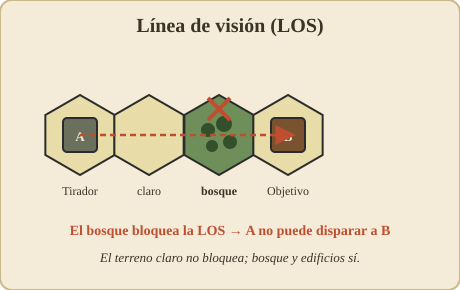
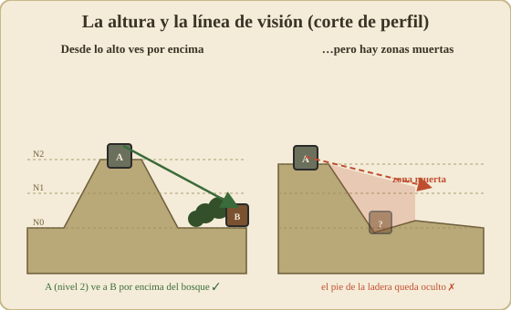
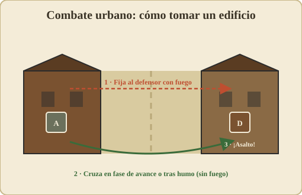
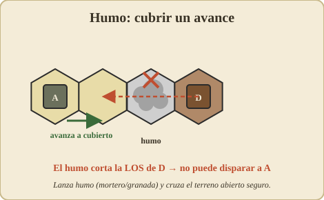

06 – Terreno, edificios y línea de visión¶
⟵ Moral · Índice · Siguiente: Blindados ⟶
El terreno hace tres cosas¶
Cada tipo de terreno influye en el juego de tres maneras a la vez:
- Coste de movimiento: lo que cuesta entrar en el hex (ver 03 – Movimiento).
- Cobertura / protección: cuánto protege del fuego a quien está dentro (modificador a favor del defensor).
- Línea de visión: si bloquea o estorba la visión que lo atraviesa.
Un mismo hex puede ser barato y expuesto (terreno claro) o caro y protector (bosque, edificio). Toda la táctica del juego es moverte por lo barato-expuesto lo menos posible y quedarte en lo protector.
Tipos de terreno (visión general)¶
Los valores numéricos exactos (coste y modificador de cada terreno) están en tus cartas. Aquí va el carácter de cada uno.
| Terreno | Movimiento | Cobertura | LOS | Notas |
|---|---|---|---|---|
| Claro / abierto | Barato | Ninguna | No bloquea | Rápido pero mortal; evita cruzarlo a la vista |
| Trigal / maíz | Medio | Ligera (ocultación) | Estorba algo | Te oculta pero no para balas |
| Huerto / matorral | Medio | Ligera | Estorba algo | Cobertura parcial |
| Bosque | Caro | Buena | Bloquea | Refugio clásico de la infantería |
| Edificio | Caro | Muy buena | Bloquea | Rey del combate urbano; ver abajo |
| Colina (niveles) | Caro por nivel | Según altura | Domina la LOS | La altura es ventaja decisiva |
| Carretera | Muy barato | Ninguna | No bloquea | Veloz pero expuesta; clave para vehículos |
| Arroyo / vado | Caro | Variable | No bloquea | Frena, puede dar algo de cobertura |
| Muro / seto (borde) | Coste de cruce | Cobertura direccional | Estorba a ras | Protege contra el fuego de ese lado |
Línea de visión (LOS) en detalle¶

La línea de visión decide quién puede disparar a quién. Es, junto con la secuencia de fases, lo que más decisiones genera.
Cómo se traza¶
- Imagina una línea recta entre los centros del hex que dispara y el hex objetivo.
- Si esa línea no toca ningún obstáculo, hay LOS: puedes disparar.
- Si la línea atraviesa un hex que bloquea (bosque, edificio, una cresta más alta), la LOS está cortada: no puedes disparar (o el blanco está oculto).
Obstáculos que bloquean vs. que estorban¶
- Bloqueo total (blocking): bosque, edificios, terreno más alto interpuesto. Cortan la visión por completo.
- Estorbo / hindrance: trigales, huertos, humo... no cortan la visión, pero empeoran el disparo (modificador en contra del tirador) por cada hex de estorbo que atraviesa la línea.
La altura manda¶

Las colinas tienen niveles. Una unidad en un nivel más alto:
- Ve por encima de muchos obstáculos (puede tener LOS donde una unidad a ras no la tiene).
- Es vista desde lejos también (la altura es un arma de doble filo).
- El terreno entre dos puntos a distinta altura crea ángulos y zonas muertas al pie de las pendientes (hexes que no se ven desde arriba por estar "tapados" por la propia ladera).
Dominar una cota suele ser el objetivo de medio escenario: desde arriba controlas con fuego todo lo que cruce abajo.
Casos límite (cómo resolverlos)¶
- La línea pasa justo por el borde entre dos hexes: hay reglas para decidir si cuenta el terreno de uno, de otro o de ambos. Consulta tu reglamento; lo habitual es que si cualquiera de los dos hexes bloquea, la LOS se ve afectada.
- Disparar desde/hacia el hex que contiene el obstáculo: una unidad en el bosque o en el edificio sí puede disparar hacia fuera y ser disparada (el obstáculo es su propia cobertura), pero ese mismo hex bloquea la visión que intenta atravesarlo.
Combate en edificios (urbano)¶
Los edificios son el terreno más importante tácticamente. Quien controla los edificios controla el pueblo.
- Cobertura excelente: la infantería dentro recibe un fuerte modificador defensivo. Es durísimo echarla a tiros.
- Bloquean la LOS: crean un laberinto de líneas de visión cortas. El combate urbano es a bocajarro.
- Se toman cuerpo a cuerpo: como el fuego apenas rompe a quien está bien atrincherado en un edificio, a menudo hay que entrar en su hex (fase de avance) y resolverlo en combate cuerpo a cuerpo.
- Plantas / niveles: los edificios grandes pueden tener varios niveles; estar arriba da mejor LOS sobre las calles.
- Riesgo de fuego (incendios): ciertos resultados o armas (lanzallamas) pueden incendiar un edificio, que entonces se vuelve intransitable y peligroso, y el humo bloquea la LOS.
Táctica urbana básica: fija a los defensores con fuego desde un edificio enfrentado, cruza la calle con humo o en la fase de avance (que no provoca fuego), y asáltalos cuerpo a cuerpo. Nunca cruces una calle abierta a la vista en fase de movimiento.

Humo (smoke) y la línea de visión¶

El humo (de morteros, granadas de humo, vehículos en módulos) es la herramienta para negar la LOS temporalmente:
- Un hex con humo estorba o bloquea la visión que lo atraviesa.
- Sirve para cruzar terreno abierto sin que el defensor tenga buen disparo.
- Se disipa con el tiempo (según reglas del módulo/arma).
Es la respuesta del atacante a un defensor bien colocado: si no puedes con su línea de fuego, ciégala.
Otros elementos de terreno (módulos)¶
Los módulos añaden terreno especial: vados, puentes, terraplenes de ferrocarril, cráteres, escombros, marismas, terreno helado/nevado (con efectos sobre movimiento y visión), etc. Cada escenario te dice qué hay en el mapa y, si hace falta, su efecto.